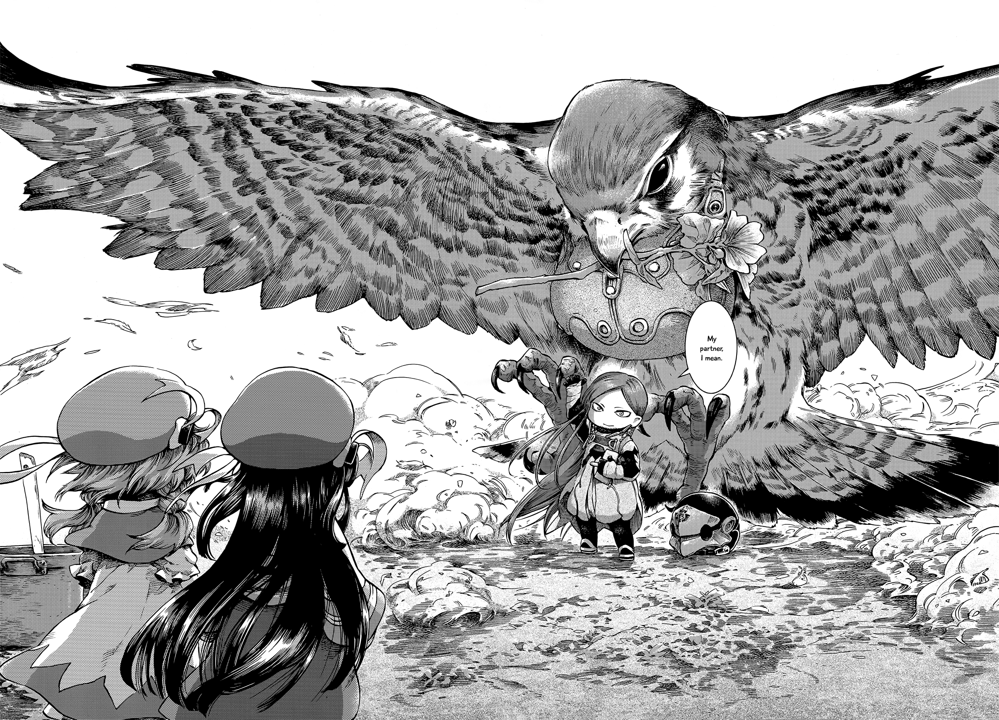

하쿠메이와 미코치
어른을 위한 동화책, 하쿠메이와 미코치이다. 신장이 9cm 정도인 요정들과 다양한 동물들이 함께 살아가는 세계관을 배경으로 이야기를 풀어내는데, 설정이 굉장히 매력적이다. 마냥 동화처럼 매일 노래부르고 춤추고 노는게 아니고, 현실세계처럼 먹고살기 위해 일을 하는 모습을 보여준다. 작중에 나오는 직업만 해도 짐꾼, 택시(?), 미용사, 석공, 재봉사, 요리사, 구멍가게 주인 등 매우 현실적이다. 물론 가희나 네크로맨서같은 판타지스러운 직업도 있다. 이 작품은 현실적인 면과 동화적인 면을 매우 적절히 조합하여서, 작중 인물들의 살아가는 모습을 보는 것 만으로도 입에 미소를 짓게 만든다.

🔼 작화가 매우 뛰어난 작품이다. 특히 동물 묘사는 정말 놀라울 수준.
그리고 음식도 자주 나오는데, 작중의 요정들은 인간에 비해 매우 작기 때문에 커피콩 한개를 쪼개서 커피를 끓인다거나 쌀알 하나로 밥을 잔뜩 만든다거나 한다. 이런 묘사가 이 작품의 재미 중 하나이다. 그리고 무엇인지 알아볼 수는 없는 음식인 경우도 많은데, 이런 것들도 참 먹음직스러워 보인다.